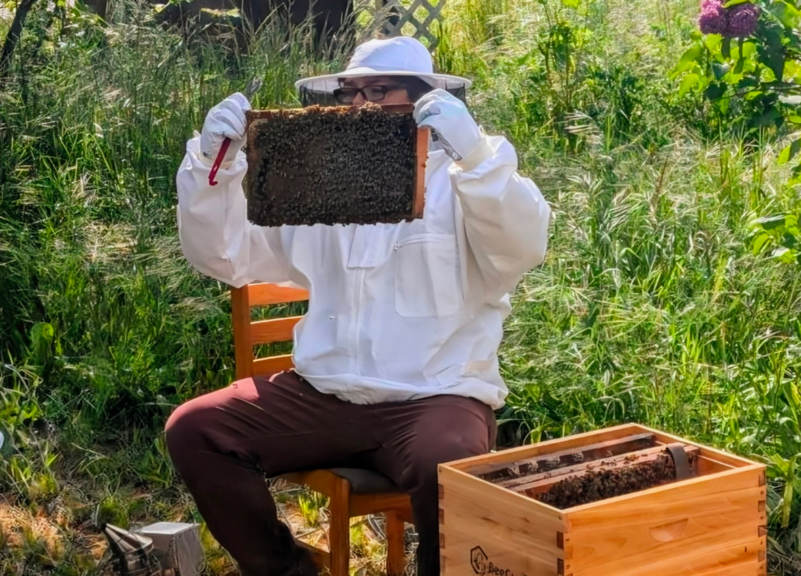

HoneyTide Apiary began with a simple fascination for honey bees and a growing desire to better understand the living systems that support our communities.
What started as curiosity quickly became a passion for stewardship, education, and a deeper relationship with the natural world.
My name is Camron Purdum, and I founded HoneyTide Apiary in Springfield, Oregon as a way to combine my love of learning, community, and environmental stewardship.
Through beekeeping, I discovered that bees are more than honey producers. They are ambassadors of a much larger story about ecology, agriculture, and our connection to the land around us.
Every colony, swarm capture, inspection, and lesson learned has reinforced the same belief: when people take the time to understand and care for nature, both communities and ecosystems become stronger.
Honey bees are only one part of a much larger network of pollinators that support food production, biodiversity, and healthy ecosystems. While honey and hive products are wonderful gifts from the hive, they are not the reason HoneyTide exists.
HoneyTide exists because healthy pollinators help create healthy landscapes, resilient food systems, and stronger communities. Through responsible beekeeping, education, and outreach, I hope to help more people understand the important role pollinators play in our daily lives.
Beekeeping has taught me humility more than anything else. Every season presents new challenges, new questions, and new opportunities to learn.
I am an active member of the Lane County Beekeepers Association and continue my education through Oregon State University's Master Beekeeper Program. These experiences allow me to learn from experienced beekeepers, contribute to pollinator education efforts, and continue developing the knowledge needed to become a better steward of both honey bees and the ecosystems that support them.
HoneyTide is built on the belief that good stewardship begins with curiosity, patience, and a willingness to keep learning.
Approaching each colony and each season as an opportunity to learn, observe, and grow.
Helping people reconnect with the natural systems, food systems, and pollinators that support daily life.
Practicing beekeeping with care, patience, humility, and respect for the bees and the land.
My vision for HoneyTide extends beyond beekeeping alone. I envision a future where people have a stronger connection to their local food systems, a greater appreciation for pollinators, and more opportunities to engage with agriculture and environmental stewardship.
As HoneyTide grows, I hope to create opportunities for education, community engagement, pollinator advocacy, and sustainable agriculture. Long-term, that vision includes expanded gardens, educational workshops, community gatherings, and a place where people can experience firsthand the relationship between healthy ecosystems, local food, and the remarkable work of pollinators.
I want HoneyTide to be a place where people can slow down, reconnect with the natural world, and discover the beauty of the systems that quietly sustain our communities every day.
At its heart, HoneyTide is about connection — between people and nature, between communities and local food systems, and between stewardship and the living world that supports us all.
Because when nature is cared for and allowed to thrive, the gifts of the hive follow naturally.
Meet the Colonies